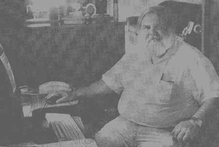

People You Should Know
Covering all corners of the
City
By Randy Liss
Press Newspapers - Thursday, July 29, 1999
- Page
25
Retirement has been rather agreeable for West Chicagoan Bob Lemon. "I've been finding other uses for my time," said Lemon, who blames chronic knee problems for the end of his teaching career at Community High School following the 1996-97 school year. "[While teaching], I put a lot of books off to the side, and I was sure the day would come when I would get to read those. After the first year, I finished off all those books."
Considering the level of involvement Lemon has had in the city, however, he’s had enough things to fill up his calendar. A West Chicago resident of nearly 30 years and one of the more visible people in the community, Lemon is a member of the District 33 School Board and the city's Human Relations Commission. He's also been a part of the West Chicago Plan Commission since 1990 ["I'm the resident old man," he Said], serving as its secretary for 8 years.
Lemon, 51, is originally from northern Michigan, about 25 miles from the straits of Mackinac Island. He grew up in such a rural area that he said he could walk out the back door of his family's home for four miles in any direction and not touch a road. "It was a different life there," Lemon said. "You had no traffic, no criminals, no perverts. Instead, you had to worry about running into wildlife.
After graduating from Northern Michigan University, Lemon taught a small kindergarten through 12th grade school in Wolverine, Mich. for a year before accepting a position as a math teacher at Community High School in 1971. Lemon has a history of teaching in his family - both his grandmother and his mother were also teachers.
"I always thought it was an honorable thing to do," he said.
It was at Community High School that Lemon discovered the first main frame computer he had ever seen. Community High School was one of the first schools in the nation to use a computer and Lemon immediately took to it, fiddling with it on weekends and becoming more and more accustomed to using it.
"It just struck me as an amazing little device," he said.
His interest in computers has evolved into WegoWeb, the unofficial web page of West Chicago, where an online resident can link to almost any bit of public information from the city’s taxing districts. Minutes and agendas from meetings, city maps and even phone numbers and e-mail addresses of Public officials can be viewed from the site. He said it took from six to 12 months to get up and running. Lemon said that a tool such as WegpWeb beams "a little bit of sunshine" on information that is oftentimes cast in shadows.
"There’s tons of information out there." Lemon said. "You just need a place where you can find it." WegoWeb can be found at http://members.aol.com/wegoweb/index.html. (now www.wegoweb.net).
Lemon has also taught computers at College of DuPage for about 13 years, but stepped away from that when he gave up his teaching profession two years ago. But his contribution to the community is quite evident. Lemon was recently giving a tour of West Chicago to an out-of-town family member when- looking around- he began to notice the numerous things he saw that he has had a say in over the years, from his time on the School Board to the Plan Commission to the Human Relations Commission.
"In the last 10 years, I've voted on a lot of stuff," Lemon said. "There's some things I've had my fingers in just a little bit."
|
 |
|
Bob Lemon sits at his personal computer at his |